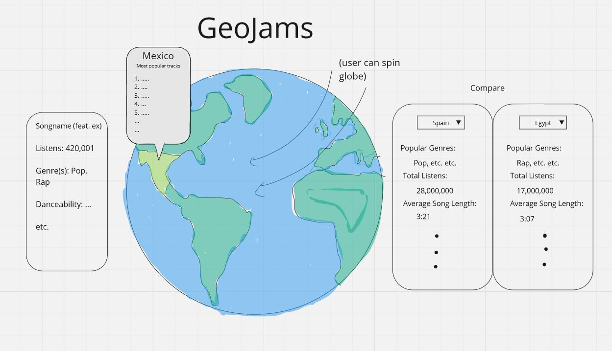
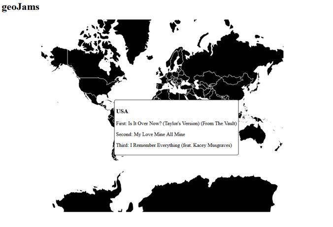
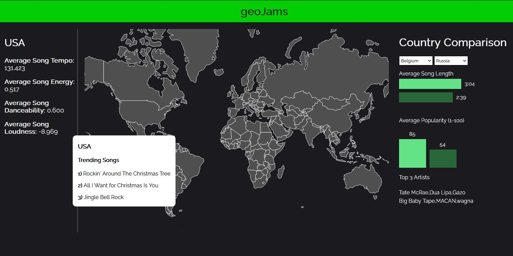

Since we both have interests in music, we thought it’d be interesting to be able to explore popular music from different countries and see the differences in genre, popularity, etc. It's also interesting to see how certain songs spread through countries/regions, especially since American-made music is known to have the largest market share and influence in the world. We wanted to explore these trends on a worldwide scale and create a useful, informative visualization out of them.
We found the GeoJSON feature of d3 to be especially interesting after doing Studio 7 in class. We wanted to find something we could visualize and compare among countries and decided music would be a great way to implement both.
We want our visualization to be informative and provide a holistic view of the world’s taste in music. It’s interesting to explore how music spreads and finds influence in different areas, and our visualization will provide this experience.
- Is there a pattern in the types of music certain regions tend to enjoy?
- How do the listening habits of various countries compare?
- Can we learn new perspectives about a specific country's music?
We utilize the Spotify API to obtain music data. We’ll be able to get top songs for each country, song popularity, genres attributed to each song, etc. Spotify also provides a feature analysis for each song, which we’ll be able to use.
Since we’re combining music and geographic data, we’ll want to have a dataset that gives us geoJSON data for each country, which we could easily get from a website like this: https://geojson-maps.ash.ms/
The Spotify API returns a JSON response for each playlist, which contains all the data we need to display for a certain country. The response contains a list of the top tracks, which we can currently display on our visualization. Each of the track objects within the playlist contains their own data such as genre, release-date, etc. which we can compile into large-scale comparisons between countries.
We came up with a few ideas for how our visualization should be implemented and drew some insight from other map visualizations from online. The interactive map here shows a map of the world and allows the user to hover over each country and see a tooltip that tells them the corresponding data. This is precisely the direction we wanted to take with our design, and ultimately the other features, color schemes, etc. will be up to us.
Most of our designs generally have the same key component of a world map in the middle of the visualization. In this design, we considered a sidebar on the left that, when a country is clicked on, highlights the country and allows the user to see the top n songs on Spotify. A sidebar on the right would allow the user to see a specific chosen song's analysis, and the country comparison tool would be under the map.
We ultimately felt that having 3 separate panels surrounding the map made it feel too cluttered, so we considered other options.
We considered moving the entire map to the left side and then having the data displayed completely on the right side. This design gave us a lot of design choices that we wanted in the final design, but we wanted to make some organizational differences.
It was a venturesome idea to pursue a visualization with a spinning globe that, otherwise, essentially has the same functionality and visualizations as the other designs. We ultimately decided against this, although it would be neat.
Our final design incorporates ideas from each of the other 3 and we believe provides the cleanest visualization for our purposes. We keep the map in the middle and (maybe) make it draggable, but hovering over a country will still provide a tooltip. Clicking on a country provides the sidebar of song data on the left, and then we have a country comparison tool on the right. We cut down on the number of GUIs from the 1st design and believe this provides a much cleaner look while maintaining the same integral functionality.
Interactive map: Interactive map that displays countries and allows user to click on a country and see the country’s trending songs
Popular song summaries: User can also see a summary each country’s popular songs, such as the common genres, overall popularity, etc.
Audio analysis: For each country, be able to see an average of the track’s audio features (Spotify API is able to provide this data), such as danceability, loudness, tempo, etc.
Country comparison: Comparison tool that lets users directly compare the popular music analysis from two countries
Color scales: Color scale that colors countries based on the most popular genre, maybe even allow the user to select a criteria to color the countries with (ie. average loudness, tempo, danceability of popular songs)
Rankings: Corresponding to the color scale, when a category like average loudness of popular songs is selected, have a ranking of countries on either end of the specture (loudest and quietest songs)
Week 1 (11/4) - Source, explore, and format data in a way that it can be used to implement our project.
Week 2 (11/11) - Milestone 1 is Nov 13. We should have a functional prototype, meaning a few must-have features, such as being able to see the top songs for each country.
Week 3 (11/18) - Continue working on must-have features.
Week 4 (11/25) - Milestone 2 is Nov 27. We should have a fully functional prototype that has all of our must-have features and some optional features.
Week 5 (12/2) - Week of presentations, so we want to work on styling and making sure the application looks good and is usable.
Week 6 (12/9) - Implement optional features, and start on deliverables like the video, process book, etc.
Week 7 (12/16) - Additional touch-ups / process book finalization and cleanup. Clean-up and make sure code is readable and commented.
At Milestone 1, we currently have a functional map that allows the user to hover over a country and see a tooltip of the top 3 songs on Spotify from that country. While the design is still very primitive, the most integral functionality -- pulling the song data from Spotify and displaying it to the user for each country -- has been implemented.
At Milestone 2, we our map is fully implemented with some slight changes. Hovering over a country highlights it, and the tooltip now appears on click. We also added our other 2 important features, which are the country song analysis (left panel) and the country comparison tool (right panel). Both are currently functional but need some tweaking. For instance, we'd rather not allow users to select countries to compare that don't have available data. We'd also like to have the selected compared countries to be highlighted on the map.
In terms of general additions/changes, we'd like to implement our optional features, as well as providing the user descriptions (likely in the form of hovers) of what each part of the visualization is showing. For example, understanding what "Average Song Danceability" means isn't really clear to a new user, so this should be explained by a tooltip. Visually speaking, the entire visualization needs some tweaks, but the main functionality is implemented. We also plan on making changes according to suggestions and results from user testing.
Our final product has made some significant changes to where we left it at milestone 2. We used a great deal of the feedback from Milestone 2 to make these changes, many of which agreed with design plans we already wanted to implement anyway. We added a coloring feature, that by default colors countries according to their average song energy, although users can change it to color by danceability instead. We made the entire site a more user-friendly experience with tooltips that explain the summary statistics (tempo, energy, etc). A tooltip is provided at the beginning with a link to the process book (but you're here already!), along with explaining the different parts of the visualization and how to use them.
In the country comparison tool, we added bars under the selections to serve as a legend for the graphs. We noted the comments on the Prototype V2, which were to add axes and labels for the bar graphs, but after user testing we decided these were not needed to convey the information and only served to clutter the graphics. However, we did make it clearer which Top 3 artists belong to which country by added a color key next to them.
Overall, we ended up implementing everything we wanted to and are very satisfied with both the final usability and design choices.
Overall, our visualization has fulfilled our project objectives. We have a finished project that allows users to explore music taste across the world and see how some countries compare to others. We leaned slightly away from our intial objectives/questions as we found out more about the data and what we wanted to show. We were made aware of this after our Milestone 2 and slightly altered our motivation and questions accordingly.
We learned a significant amount about how different music was between continents and how certain clusters of regions tend to have similar song features. The visualization works as planned, and other than a few small design touch-ups, there isn't too much to improve on.